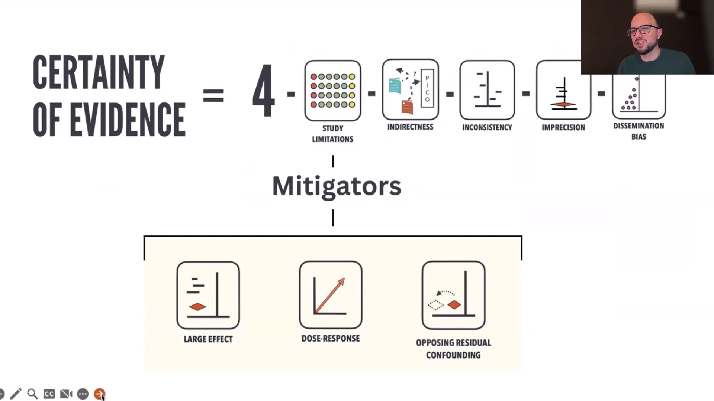
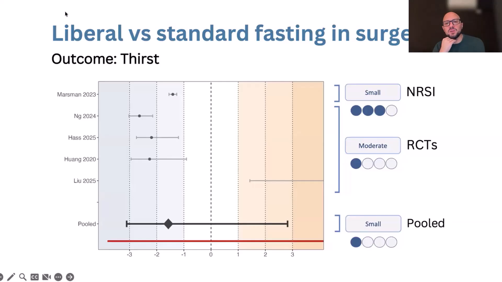
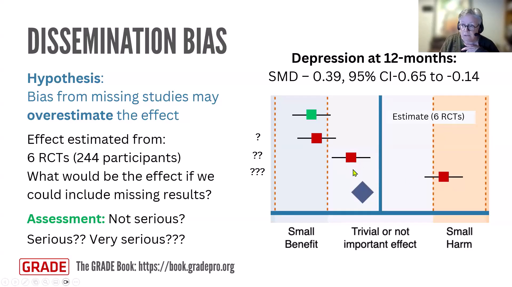

Evaluating limitations in the design, execution or reporting of studies when rating the certainty of evidence using GRADE
Module 4Professor Ignacio Neumann（GRADE Book editor、GRADE Southern Cone Network Director）とSue Brennan, Senior research fellow （Cochrane Australia、School of Public Health & Preventive Medicine, Monash University）による講義です。研究に限界があることを見つける作業と、 その限界が確実性を下げるほど結果を動かすかを判断する作業を分けます。
前半はStudy limitations、後半はDissemination biasを扱います。どちらも結論は同じで、「懸念がある」だけでは格下げせず、真の効果が現在のtargetとは別の効果範囲へ動きうるかを、閾値、層別解析、感度分析で確かめます。
本文と末尾Q&Aは、配布スライドと動画文字起こしを照合した日本語学習用の忠実な再構成です。逐語訳ではありません。
Risk of biasは、一般語としては「あらゆるバイアスの危険」を含みます。しかしGRADEには、 研究内の設計・実施・報告の問題とは別に、結果が選択的に入手できないDissemination biasという独立ドメインがあります。 一つのドメインだけをRisk of biasと呼ぶと、「ここだけがバイアスで、他のバイアスは別物」のように見え、範囲が曖昧です。
このドメインが実際に問うのは、ランダム化、割付concealment、盲検化、欠測、選択的報告、 交絡制御など、研究のdesign・execution・reportingの限界から生じる偏りです。 したがって原因をそのまま表すStudy limitationsの方が正確です。 RoB 2やROBINS-Iは各研究を評価する道具として使い続けますが、body of evidence全体のドメイン名は Study limitationsと整理する、という関係です。
Publication biasは「論文として出版されたか」に焦点を当てた言葉です。しかし実際にメタ解析から欠けるのは、 未出版の研究全体だけではありません。登録済み・出版済み研究の中で、測定したアウトカムの結果だけが報告されない場合、 学会抄録や規制当局資料にはあるが論文で利用できない場合、検索で同定できない研究もあります。
GRADEは結果のP値、効果の大きさ、方向に応じて、研究または研究結果が利用可能になりにくい現象全体をDissemination biasと呼びます。Publication biasはその一部です。この広い用語なら、 「含めた研究内の欠測結果」と「同定できなかった研究全体」の両方を一つの枠組みで扱えます。

図では、非ランダム化研究で確実性を高めうるlarge magnitude of effect、dose-response gradient、all plausible residual confoundingの三つに、Study limitationsから矢印が伸びています。これは三要因を、Study limitationsと無関係な 「加点ボーナス」として扱わないためです。
非ランダム化研究で中心となる限界は交絡です。非常に大きな効果がある、用量が増えるほど効果が一貫して増える、 残余交絡があるとしても観察された効果を弱める方向にしか働かない、という所見は、交絡だけでは観察結果を説明しにくいことを示します。三要因は、 Study limitations、とくに交絡への懸念を軽減するmitigatorとして理解できます。 矢印は「まず限界を評価し、その限界が結果を説明できるかを三要因で再検討する」という順序を表します。
- 低リスク研究と高リスク研究が同じ効果範囲：仮説上の偏りがあっても結論の範囲を変えていないため、通常は格下げしません。
- 低リスク研究と高リスク研究が別の効果範囲：原則は低リスク研究を重視します。ただし精度・直接性など全ドメインを比較し、低リスクという一点だけで自動採用しません。
- 高リスク研究しかない：偏りの方向と現実的な大きさを仮定し、補正後の効果が何本の閾値を越えるかを感度分析します。

手術前は誤嚥を避けるため長時間の絶飲食が一般的でした。Liberal fastingは、手術のおよそ1時間前まで 少量の水を飲める方針です。アウトカムは「渇き」。水を飲めば渇きが減りそうだという、直感的にも面白い問いです。
4件の小規模RCTは中等度の利益、1件の大規模でよく調整されたコホート研究は小さな利益を示しました。 しかし完全なGRADE評価では、RCT群はランダム誤差と不精確さが大きくvery low certainty、 NRSIは交絡の懸念を評価してもmoderate certaintyでした。
この例はStudy limitationsが軽い研究を機械的に選ぶのではなく、全ドメインを通した確実性が最も高いbody of evidenceを選ぶことを教えます。
介入効果を扱う研究では、高リスク研究が利益を過大評価する方向が一般的な作業仮説です。 ただし欠測、測定、交絡の構造によっては過小評価も起こるため、方向はアウトカムごとに事前に言語化します。
メタ疫学研究で観察される偏りは平均的にはおよそ20〜30%程度という目安が示されますが、 固定の補正式でも上限でもありません。低炭水化物食の例では、統合効果約1kgを trivial/small境界の5kgまで動かすには4〜6倍ほどの歪みが必要でした。 その大きさは通常想定する偏りよりはるかに大きく、74%の情報が高RoBでも格下げしませんでした。
現実的な補正で一つの重要な閾値を越えうるなら通常serious（1段階）、 複数の重要な範囲を越えうるならvery serious（2段階）を検討します。 高RoB研究の割合だけを1段階・2段階へ直結させません。

例は12か月時点のうつ症状で、6 RCT、244人、SMD −0.39（95% CI −0.65〜−0.14）、 現在のtargetは小さな利益です。欠測研究を加えても小さな利益なら格下げ不要です。 trivialへ動くならserious、利益から小さな害まで反転しうるならvery seriousを検討します。
Scenario 1は、レビューに含まれた研究がアウトカムを測定したのに結果を報告していないknown unknownsです。研究規模や既存データ量が分かるので、欠測結果がどれほどなら閾値を越えるかを試せます。 Scenario 2は研究自体を同定できていないunknown unknownsで、より多くの仮定が必要です。 ROB-MEは構造化評価を支え、funnel plotや非対称性検定は、とくにScenario 2を探る補助として今も使います。
Q1RCTと非ランダム化研究は、いつ一緒に評価・統合すべきか？
両者の本質的な方法論上の差は交絡制御です。RCTの確実性がindirectnessやimprecisionでlow/very lowなら、 NRSIが直接性や精度を補えるかを探す価値があります。結果が整合し、NRSIが情報を改善するなら統合または並列提示を検討します。
小さなRCTと非常に大きなNRSIが食い違い、交絡が疑われるなら安易に統合しません。 RCTがすでにmoderate/high certaintyなら、NRSIの追加レビューは必須ではありません。
Q2低RoB研究と高RoB研究の比較はoverall RoBで行うのか、特定ドメインで行うのか？
通常はoverall RoBを使います。ただし盲検化不足など特定ドメインが効果を動かすという事前仮説があるなら、 そのドメインで層別します。結果を見てから都合のよいドメインを選ばず、プロトコルで少数の仮説を事前指定します。
複数の妥当な感度分析が同じ効果範囲なら確信が増し、異なる範囲ならその不確実性をratingへ反映します。
Q3術前絶食例では、NRSIが効果を過小評価し、RCTの中等度効果が真実という可能性もあるのでは？
その可能性はあります。だから研究デザイン名だけで決めません。大規模で十分調整されたコホートは精度が高く、 小規模RCTはランダム化の利点があってもrandom errorとimprecisionが大きいという交換条件があります。
各bodyについて全GRADEドメインを評価し、最終的なcertaintyが高い方を基礎にします。 この例ではNRSIがmoderate、RCTのみはvery lowで、NRSIの小さな利益をより信頼しました。
Q4ROB-MEなどのstructured risk-of-bias評価はGRADEの前か後か？
構造化評価はGRADE判断の入力です。データ収集・解析の段階でRoB 2、ROBINS-I、ROB-MEなどを完了し、 その結果を各GRADEドメインで閾値に照らして解釈します。「懸念の検出」と「格下げ判断」は順番のある別作業です。
Q5Funnel plotはもう捨てるべきか？
捨てません。ROB-MEは、含まれた研究で測定済みなのに欠けた結果というknown unknownsを構造化して評価します。 Funnel plotと非対称性の検討は、同定されていない研究というunknown unknownsを探る補助として引き続き有用です。 研究数や異質性などの限界を理解し、単独で断定しないことが条件です。
Q6観察できた1研究は小さな害、別の2研究は結果欠測なら、Dissemination biasで格下げするか、欠測も害と仮定するか？
自動的にどちらとも決めません。小さな害が中等度・大きな害を過小評価していないか、欠測2研究の規模・重みと、 どの程度の結果なら現在のtargetやnet effectを変えるかを調べます。登録情報や著者照会も含む「探偵作業」を行い、 現実的な欠測結果で閾値を越えるなら格下げします。
Q7Low-carbレビューのsome concernsは低RoB群と高RoB群のどちらへ入れるか？
二通り試します。まずsome concernsをlowとまとめ、次にhighとまとめます。どちらでも全群がtrivial範囲なら頑健です。
低RoB研究が一つもない場合は、妥当な偏りの方向と大きさを置きます。平均20〜30%の過大評価を補正しても 閾値を越えないなら、研究の半数が高RoBという理由だけでは格下げしません。
Q8低RoB研究と高RoB研究が食い違うとき、低RoBの推定値を採用するのか、全体を格下げするのか？
他条件が同程度なら、利益・害の評価には低RoB推定値を重視するのが一般原則です。 ただし低RoB subsetが著しく不精確、非直接的、少数なら、それだけで優越とは言えません。
低RoBがsmall、高RoBがmoderateなど別範囲なら、真の効果範囲への不確実性を認めて格下げすることもあります。 どのbodyを採用するかと何段階下げるかを、全ドメインで別々に説明します。
Q9この比較・感度分析の方針はプロトコルで事前指定すべきか？
はい。どのRoB区分、どの特定ドメイン、どの方向の偏り、どの閾値を使うかを可能な限り事前に記録します。 目的は、結果を見てから毎回もっともらしい説明を作ることではなく、他者が再現できる標準化した枠組みを持つことです。
引用文献
- 1.Cochrane Learning Live. Evaluating limitations in the design, execution or reporting of studies when rating the certainty of evidence using GRADE. July 2026. https://www.cochrane.org/events/evaluating-study-limitations-using-grade
- 2.YouTube recording. Professor Ignacio Neumann and Sue Brennan, Senior research fellow. https://www.youtube.com/watch?v=f941nE98aRY
- 3.GRADEBook. Overview of the GRADE approach. https://book.gradepro.org/guideline/overview-of-the-grade-approach
- 4.Cochrane. ROB-ME: Risk Of Bias due to Missing Evidence in a synthesis. https://www.riskofbias.info/welcome/rob-me-tool
- 5.Cochrane Handbook. Chapter 13: Assessing risk of bias due to missing results in a synthesis. https://www.cochrane.org/authors/handbooks-and-manuals/handbook/current/chapter-13